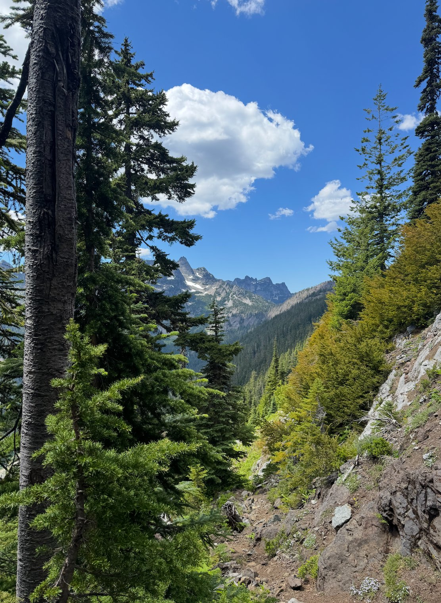
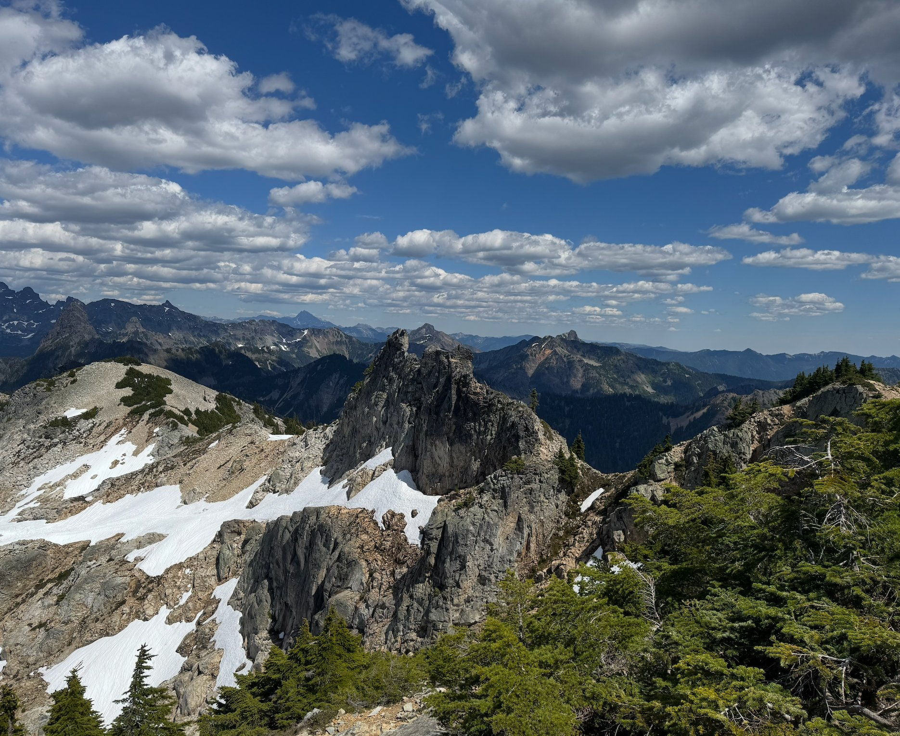
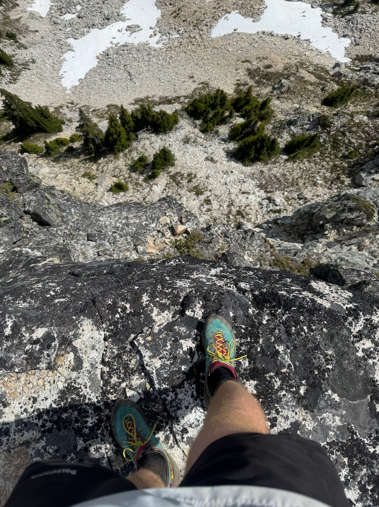

Doing the CURL
06/26/2026
Climber Kyle, a local PNW trail legend, posted about a route called the CURL a few years ago, and I’ve been wanting to do it since. I got up on it on a Monday, and had a mixed bag of an experience. I started up with the fifth class south gulley route on Guye peak, which is never too much fun but not terrible. After this, the hike up to Snoqualmie peak from Guye was straightforward, but a little bit of a sufferfest on a hot day.

The ridge going east from Snoqualmie peak was the highlight of the day, interesting 4th and low 5th scrambling on an extremely exposed, clean and solid ridge line.
The rest of the route was less fun than I thought it would be. Summiting Lundin peak was okay, large exposure made it interesting. However the remaining Red and Kendall peaks were mostly a choss fest. I would give the route a 5/10 overall.